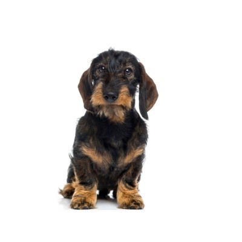

Labrador Retriever:
half jaar oud
€1000,-
achtergelaten
Dierentehuis Den Bosch
Duitse Herder:
Half jaar oud
€800,-
Van een fokker gekregen
Beagle:
Kwart jaar oud
€500,-
Gevonden op straat
Labrador Retriever:
half jaar oud
€1000,-
achtergelaten

Teckel:
half jaar oud
€925,-
achtergelaten
Rottweiler:
2 maanden oud
€1200,-
Gekregen van fokker
Blauwe Rus:
1 maand oud
€500,-
achtergelaten
Abessijn:
1 maand oud
€800,-
Gekregen van fokker
Ragdoll:
2 maanden oud
€1000,-
achtergelaten
Brits Korthaar:
2 maanden oud
€650,-
gekregen van fokker